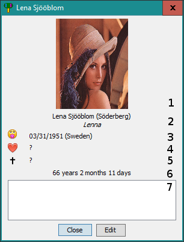

: birth date and location;
: birth date and location; : if the person is/was married, wedding date and location;
: if the person is/was married, wedding date and location; : death date and location;
: death date and location;
You can view detailed information for each card by double-clicking it.

The zones are detailled bellow:
: birth date and location;: if the person is/was married, wedding date and location;: death date and location;Next topic: Adding cards